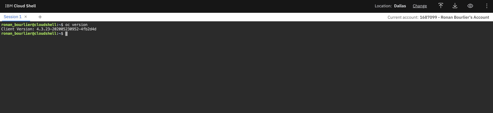

Prerequisites to the Labs
Ask for an access
You first need an IBM Cloud account, then you need to request an access to an OpenShift cluster in IBM Cloud.
Here are the steps.
IBM Cloud account creation
Please watch this 3 min video to better understand IBM Watson Cloud and the process to create an account. The first 2 minutes are enough to create the account.
Step 1: Getting a free IBM Cloud account
Create an account on IBM Cloud to try Watson services for free with no time restrictions: Sign up for free. You'll receive an email to confirm and activate your account.
Request Access
Once your IBM account is created, you can now request an access to an Opeshift instance. Go to https://ocp-intro-meetup.mybluemix.net/.
The Lab Key is oslab and you IBMid is the email address you used for you registration. Accept the terms and condition and click on Submit.

Then you should get a quick answer letting you know that you get an access.

Click on "IBM Cloud Account", and it will open your IBM Cloud account page.
You should have one cluster in the list.

Click on the cluster name. This screenshot is from my first access, it explains why the name is different.

Click on "OpenShift web console" to open the web console.

You now have access to the Web Console
OC command line installation
Usage from IBM Cloud shell
For this lab, it is easier to use the IBM Cloud Shell, where all tools are already installed.
Go to https://shell.cloud.ibm.com.
It opens a shell prompt where you can use all IBM Cloud tools, including the oc command.

You can then follow the instructions below at the step "Accessing your cluster"
Installation on your workstation
This is the steps to follow to install the CLI tools on your workstation.
Go back to the Cluster page and click on Access.

Follow the steps to access your cluster from the command line.